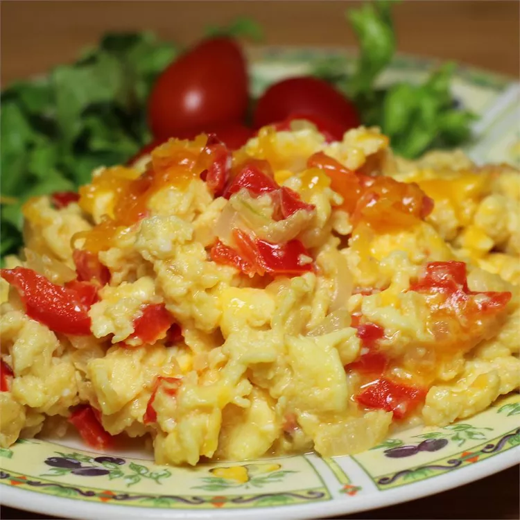

Home
Scrambled vegie eggs

Scrambled eggs with vegetable
A quick and nutritious meal of fluffy scrambled eggs mixed with sautéed vegetables.
Ingredients
- 3 eggs
- 1/4 cup chopped onion
- 1/4 cup chopped bell pepper
- 1/4 cup chopped spinach or tomatoes
- 1 tbsp oil or butter
- Salt and pepper to taste
Steps
- Whisk eggs with salt and pepper.
- Heat oil, cook vegetables for 2–3 mins.
- Add eggs, stir gently until set.
- Serve warm with toast or on its own.